WAVE BEYOND THE SPATIAL FRAME / SLASH ACROSS THE SONIC LANE
概念核心與硬體規格
突破螢幕邊框限制，將節奏打擊維度由 2D 平面延展至實體 3D 空間。
《FRAVE》是一款結合 32 吋 120Hz 大型觸控螢幕與 4 軸對向式紅外線雷射感測陣列的實驗性街機節奏遊戲。作品名稱取自「FRAME（全域劃切）」與「WAVE（空間手勢）」兩個核心互動機制。遊戲旨在打破傳統下落式音遊受限於螢幕框線的互動邊界，玩家不僅需在 24 軌 360 度環形軌道上進行多點觸控，更需在特定節奏將雙手揮出螢幕外緣、藉由空間光學感測完成判定，建構虛實交疊的體感節奏循環。
五大核心音符與判定架構
譜面採用 360 度環形 24 軌道空間佈局，配合高敏度觸控與紅外線感測陣列，由五種核心音符構成完整打擊循環：
 3D 環形判定軌道與 Frame 斬擊導引箭頭實機畫面
3D 環形判定軌道與 Frame 斬擊導引箭頭實機畫面
Tap（點擊）
分佈於 24 軌道上的基礎點擊音符。考驗指尖在環形判定線上的精準節奏擊打。
Touch / Slide（滑動）
連續接觸滑動音符。引導指尖於多軌道間順暢走位，提供流暢連貫的觸控軌跡反饋。
Hold（長按與動態幽靈避讓）
持續追蹤長按音符。為解決高密度譜面下的視角遮蔽問題，系統內建動態幽靈避讓機制——當 Tap 音符與 Hold 長條重疊於同一軌道時，底層長條會即時切換為 10% 半透明幽靈態，消除視覺盲區以確保判讀清晰度。
Wave（越境空間揮手）
本作的核心特色機制。機台外框搭載 4 組對向式紅外線雷射陣列，玩家需依節奏將雙手揮出螢幕表面、穿過外框實體空氣完成判定，實現突破物理框線的空間手勢互動。
Frame（全域跨屏斬擊）
當音符觸及判定線時，玩家順應動態箭頭引導於全螢幕範圍內執行大跨度滑動斬擊，充分釋放大尺寸街機面板的肢體揮擊張力。
技術架構與工程研發
為確保大型高刷新率觸控與實體感測的極致即時性，底層以 Unity (C#) 為核心開發多項關鍵工程技術模組：
3D 環形軌道與自研譜面編輯器
建構以結構化 JSON 為基礎的譜面管線，支援 360 度封閉圓環與 U 型非封閉軌道之動態網格生成。配套自研專屬視覺化編輯器，實現即時波形對位、音符時間軸排程與空間空間軌跡預覽。
獨立音符動態流速控制 (Per-Note Velocity)
突破傳統節奏遊戲全譜面單一流速限制。系統支援動態變速（Dynamic BPM），並允許為單一音符獨立指派速度倍率（0.25x～8x），於同一時間軸上呈現多重流速交疊的視差運鏡與視覺張力。
120FPS 觸控軌跡插值補間演算法
針對大型觸控面板在超高速劃動或多指切換時可能產生的訊號丟採樣現象，研發軌跡插值補間與時間戳記憶邏輯，在 120Hz 高刷新率面板下徹底消除高速 Frame 斬擊的判定斷點。
TUIO 協定與多感測器硬體整合
以 TUIO（Time-Up-Input-Object）協定作為底層通訊架構，將 32 吋多點觸控面板與特製 L 型外框之 4 組紅外線雷射感測陣列數據進行毫秒級同步處理，確保空間揮手判定零感官延遲。
收錄樂曲
首發收錄 4 首為本作量身打造的原創節奏樂曲，呈現多變曲風與空間打擊張力：


街機原型與現場展出
打造實體獨立筐體原型，完成實機人機工程驗證與公開試玩展出。
為驗證 WAVE 空間感測與 FRAME 全域斬擊的實體可玩性，團隊研發打造客製化街機原型機台，配置 32 吋 120Hz 觸控螢幕並於特製黑化 L 型金屬結構外框嵌入 4 組對向式紅外線感測陣列。機台於台灣規模最大的學生設計展「新一代設計展（YODEX）」公開展出，吸引大量音遊玩家現場排隊體驗，在實體打擊回饋、空間感測精準度與高頻率連續操作穩定性上均獲得極佳驗證與高度評價。
 客製化實驗街機原型全貌
客製化實驗街機原型全貌
 Wave 空間越境紅外線感測操作展示
Wave 空間越境紅外線感測操作展示
 新一代設計展現場試玩人潮
新一代設計展現場試玩人潮
 玩家現場實機多點觸控打擊體驗
玩家現場實機多點觸控打擊體驗
 展位整體視覺與周邊陳列
展位整體視覺與周邊陳列
 實機動態遊玩展示
實機動態遊玩展示